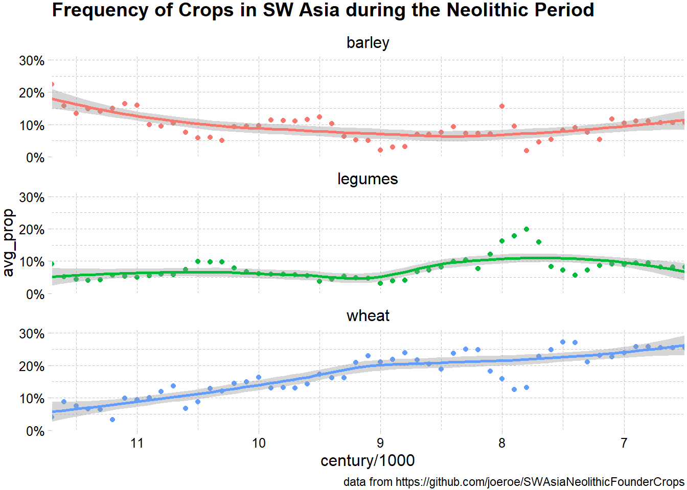

library(skimr)
library(tidyverse)
library(ggthemes)
library(gt)TidyTuesday Week 16: Neolithic Founder Crops
R
TidyTuesday
R-code
Code-Along
Data-Viz
TidyTuesday: Exploring early agriculture in SW Asia
Today’s TidyTuesday relates to the use of plants in the Neolithic era and is based on a paper by Arranz-Otaegul and Roe.
The authors have made their data and analysis available on GitHub. The methods for generating all the figures and tables are in an RMarkdown document with some explanatory text. Having just recently looked at the code and data for one of my older papers, I now appreciate this markdown approach. Everything needed is linked together through the markdown document and the GitHub repo. My code is only as understandable with the paper notebook that resides in my former lab. Even though the code was commented, it is less clear many years later. I find markdown/ quarto a little difficult to code in. I’m not sure why- maybe the interspersed text and code is distracting. I usually code in R files for more complicated projects and then copy them into markdown/quarto. But I definitely appreciate markdown after working on today’s project.
The data can be downloaded through the tidytuesday package using tuesdata <- tidytuesdayR::tt_load(2023, week = 16). Or the data and the code can be downloaded from the project’s Github repo. I actually don’t use the data from tidytuesday, but instead work off their analysis.
To briefly summarize the work of Arranz-Otaegul and Roe, in the 1980s the concept of “founder crops” was proposed. These founder crops were a set of crops that were generally all cultivated together and were wide spread as the first main agricultural crops. Arranz-Otaegul and Roe propose that with the increased data generated since the 80s, a more refined approach to the beginnings of argriculture can be taken. They break down agriculture into several different processes (selection of plants, domesitcation, plant management, etc.) which occurs over longer periods of time rather than the development agriculture occuring as a single, rapid event. Arranz-Otaegul and Roe examine the plant remains reported from 135 sites over a wide range of periods in the neolithic era. They find that founder crops don’t necessarily come as a “package”, that a variety of other plants were fairly important, and that the increased cultivation of wheat was the dominate change in the types plants used during the neolithic period. I should note, I’m a chemist, not an archeology/ archeobotanist, so this is not the most nuanced summary of their work.
I was particularly intrigued by their conclusion about wheat, which is graphically represented in Figure 4 of their paper. I found the figure a bit unclear; stacked area plots are not common in chemistry and I’m not expert at reading them. Wheat certainly does increase with time, but it was hard for me to tell what the other crops were doing. So, for tidytuesday, I wanted to explore this specific question- how does the use of wheat change over time.
{kind=link}
The file you get from the tidytuesday package is the same as the “swasia_neolithic_flora.tsv” from the paper’s repo with some minor clean-up. I don’t want to replicate all there analysis here to get to the point of being able to make the figure I want, so I saved the object flora_ts after it was generated in line 256 of their SI1.RMD file. This has the data partitioned by century and has been reshaped.
flora_ts <- read_rds("flora_ts.rds")There are 8 founder crops. The original analysis binned together wheat varieties and I am also binning all the legumes together, just to make the resulting graph less busy. I’m also dropping flax. This code chunk is modified from their code chunk ts-founder-crops, which starts at line 573 and ends with saving figure 4. This chunk calculates the proportion of archaeological sites at which the crop was found at in each century. (This is called an assemblage in the paper.)
founder_crops_binned <- flora_ts %>%
# aggregate the legumes and the wheat
mutate(founder_crop = recode(founder_crop,
"einkorn wheat" = "wheat",
"emmer wheat" = "wheat",
"chickpea" = "legumes",
"bitter vetch" = "legumes",
"lentil" = "legumes",
"pea" = "legumes",
"flax" = "flax",
.default = founder_crop)) %>%
filter(founder_crop != "flax") %>%
# Aggregate by founder crops
group_by(century, site_name, phase_code, founder_crop) %>%
summarise(prop = sum(prop, na.rm = TRUE), .groups = "drop") %>%
# Add number of assemblages per century
group_by(century) %>%
mutate(n_assemb = length(unique(phase_code))) %>%
# Calculate average proportion
group_by(century, founder_crop) %>%
summarise(avg_prop = sum(prop) / first(n_assemb))Drop the NAs. This corresponds to all the plants which are not founder crops.
founder_crops_only <- founder_crops_binned %>%
drop_na(founder_crop)First, I wanted to see roughly how common each crop was over all time.
founder_crops_only %>%
group_by(founder_crop) %>%
summarize(pct = round(mean(avg_prop), 2) * 100) %>%
gt() %>%
cols_label(founder_crop = "Founder Crop", pct = "% of Sites") %>%
opt_stylize(style = 6, color = "blue", add_row_striping = TRUE) %>%
tab_header(title = "Mean Frequency of Crops over Time") | Mean Frequency of Crops over Time | |
| Founder Crop | % of Sites |
|---|---|
| barley | 9 |
| legumes | 6 |
| wheat | 15 |
Now, I’m going to create a scatter plot with a trendline as a guide for the eyes. I’m using facet wrap, so each crop is on its own plot.
founder_crops_only %>% ggplot(aes(century / 1000, avg_prop, color = founder_crop)) +
geom_point() +
geom_smooth() +
facet_wrap(~ founder_crop, nrow = 3) +
scale_x_reverse(
breaks = scales::breaks_width(-1),
limits = c(11.7, 6.5),
expand = expansion(0)
) +
scale_y_continuous(
limits = c(0, 0.3),
breaks = scales::breaks_width(0.1),
labels = scales::label_percent(accuracy = 1),
expand = expansion(mult = c(0, 0.05))
) +
theme_pander() +
theme(legend.position = "none") +
labs(x = "ka cal BP", y = "Mean proportion of assemblages", fill = NULL) %>%
labs(title = "Frequency of Crops in SW Asia during the Neolithic Period", caption = "data from https://github.com/joeroe/SWAsiaNeolithicFounderCrops")
So, it looks like barley and legumes are fairly constant with time, but wheat does increase consistently. A note about the x-axis- the times are listed as before present (BP), so a larger number is longer ago. Present is defined as January 1, 1950.
Citation
BibTeX citation:
@online{e. sinks2023,
author = {E. Sinks, Louise},
title = {TidyTuesday {Week} 16: {Neolithic} {Founder} {Crops}},
date = {2023-04-18},
url = {https://lsinks.github.io/posts/2023-04-18-tidytuesday-founder-crops/founder-crops},
langid = {en}
}
For attribution, please cite this work as:
E. Sinks, Louise. 2023. “TidyTuesday Week 16: Neolithic Founder
Crops.” April 18, 2023. https://lsinks.github.io/posts/2023-04-18-tidytuesday-founder-crops/founder-crops.